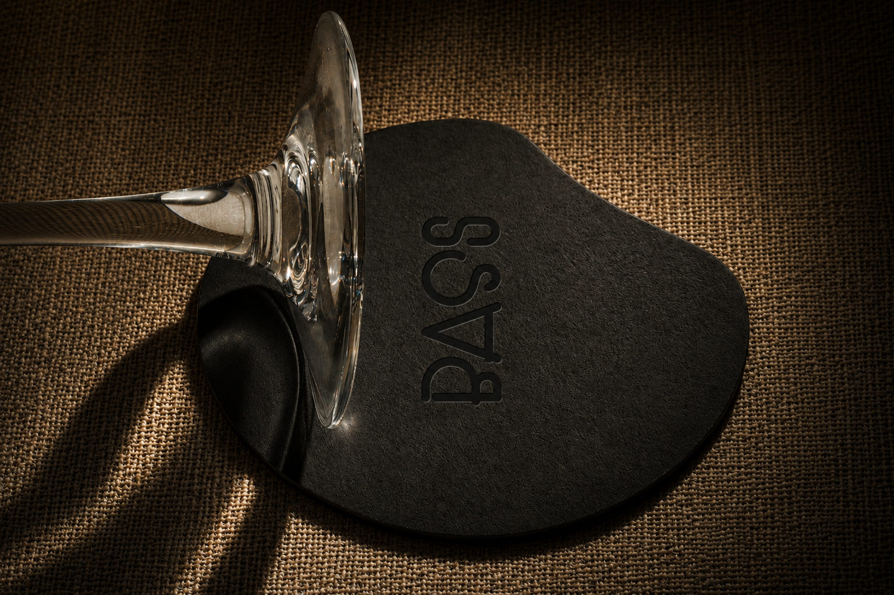
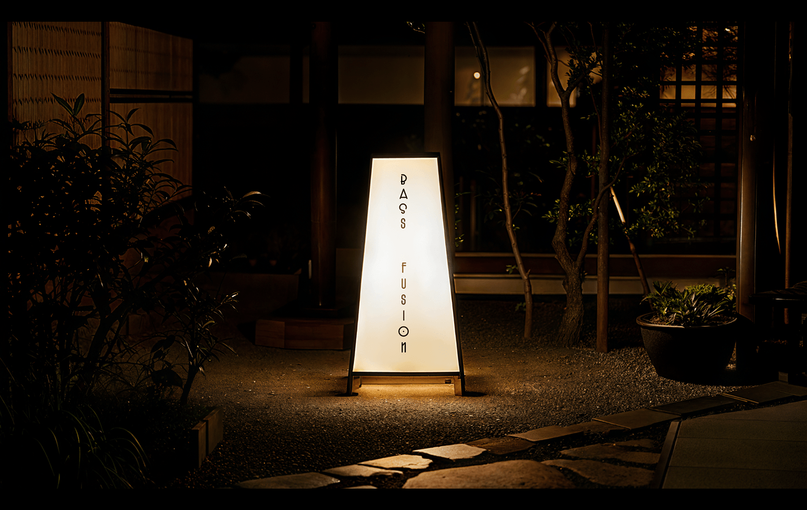
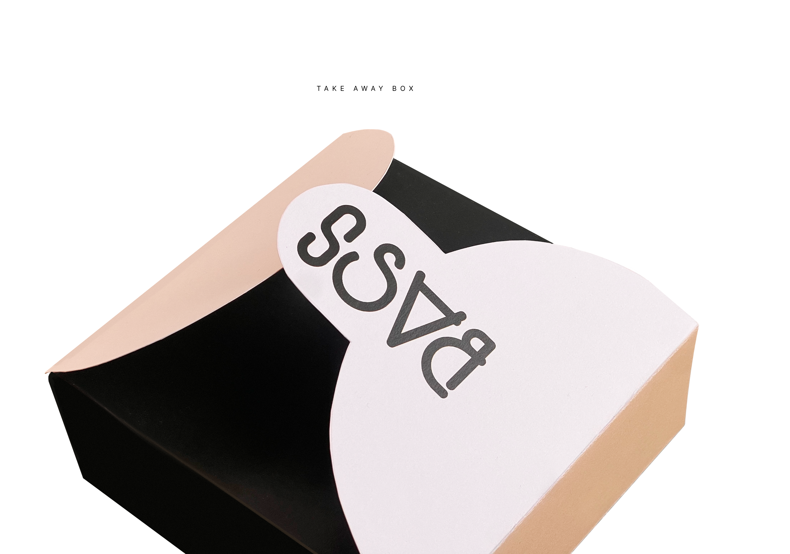
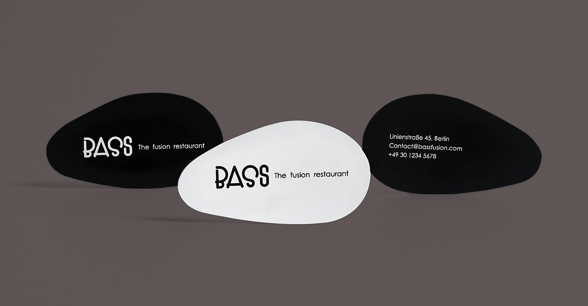
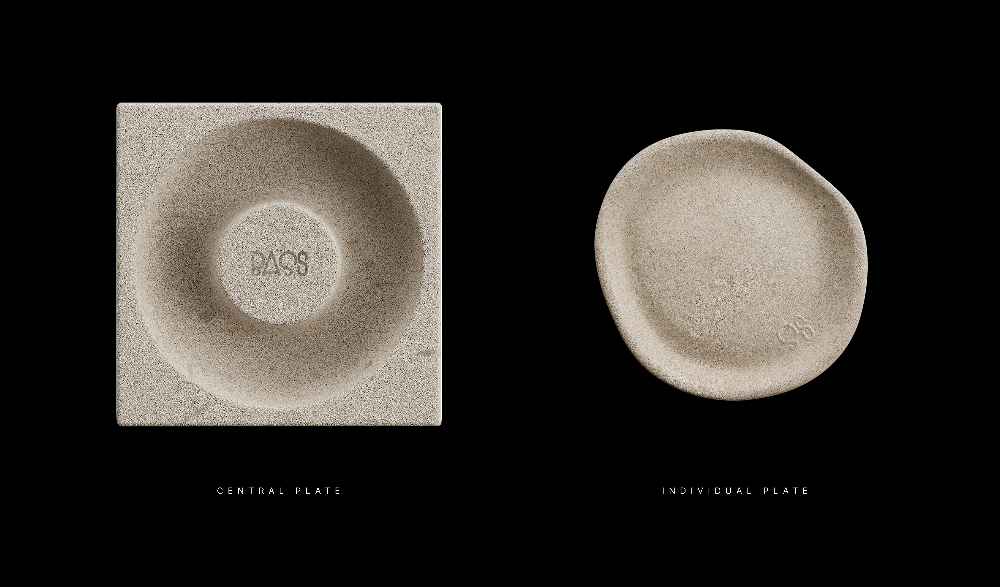
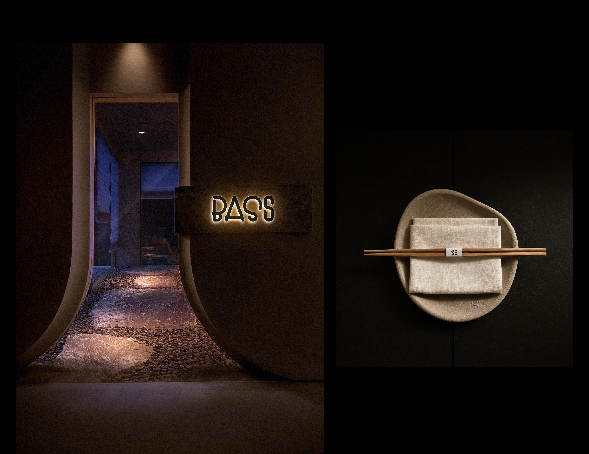
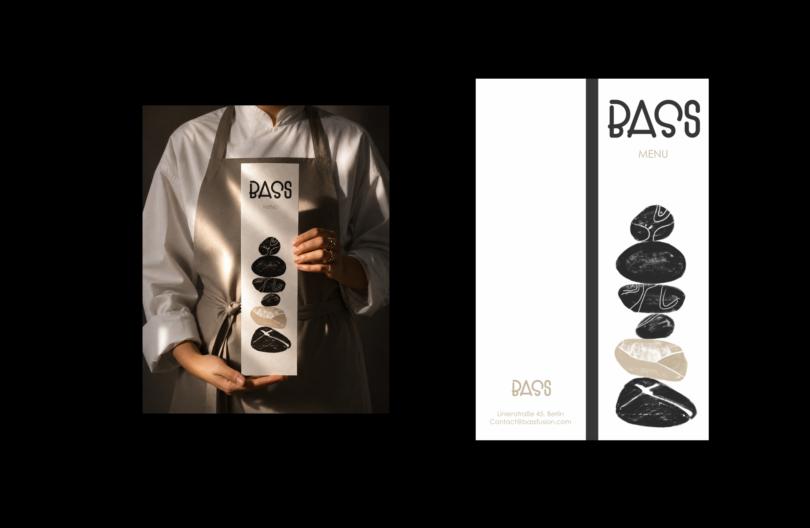
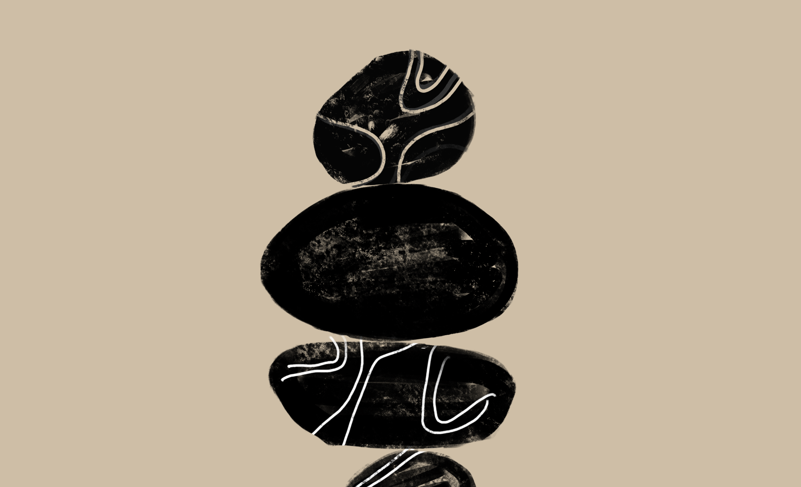
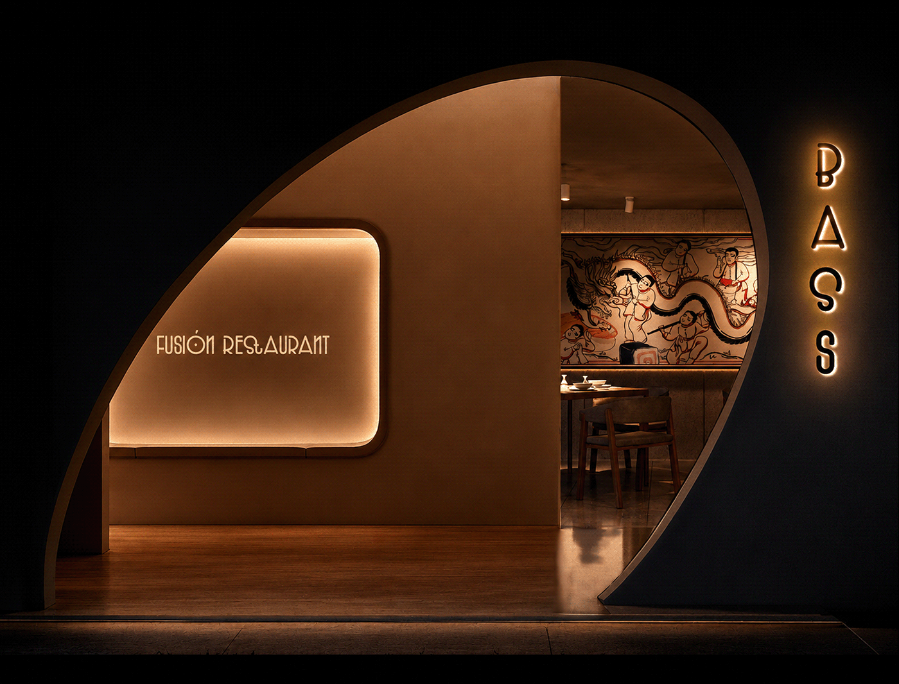

Bass
2026
Graphic Design & Art Direction
Editorial Design / Typography / Visual Identity
Visual study on rhythm, form, and typographic contrast.
Role: Designer & Art Director.
OVERVIEW
BASS is a fusion restaurant concept that brings together Spanish and Asian cuisine. My goal was to develop a visual identity that reflected this combination of cultures through a simple, elegant and meaningful design.
THE IDEA
I wanted to represent fusion without relying on obvious cultural symbols. Instead, I explored the idea of balance, which I felt perfectly captured the relationship between two different cuisines coming together in one dish.
This led me to create a series of illustrations featuring stones stacked on top of one another. Each stone is slightly different in shape and texture, representing the individuality of each cuisine, while their arrangement creates a sense of harmony.
BRINGING THE CONCEPT TO LIFE
I developed a minimalist visual language using organic shapes, subtle textures and a restrained palette of black, cream and warm neutrals. The imperfect, hand-crafted appearance of the illustrations adds warmth and personality to the otherwise clean identity.
I also designed the BASS logo, combining geometric letterforms with subtle decorative details to create something contemporary yet distinctive.
FINAL RESULT
The final identity was applied to restaurant materials, including menus and branded tableware, creating a consistent visual experience across different touchpoints.
What I like most about this project is how a very simple visual element can communicate a much bigger idea. The stones aren't just decorative; they represent the balance, contrast and harmony that define BASS.
The restaurant interior photographs are used for visual context and are not my own work.








